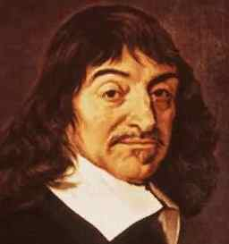

Ρενέ Ντεκάρτ

Ο Ρενέ Ντεκάρτ θεωρείται πατέρας της νεότερης φιλοσοφίας. Μεταχειρίστηκε τον σκεπτικισμό προκειμένου να θεμελιώσει την βεβαιότητα για τη δυνατότητα της γνώσης.
Ο Ντεκάρτ (ή Καρτέσιος όπως είναι γνωστός) διέκρινε στην πραγματικότητα τρία πεδία:
Η μέθοδος του Ντεκάρτ προκειμένου να άρει τις αμφιβολίες που θα μπορούσε να διατυπώσει κανείς για την ύπαρξη αυτών των τριών πεδίων της πραγματικότητας ήταν η ακόλουθη: χρησιμοποιόντας τον σκεπτικισμό, επιχείρησε να μας δείξει πως μπορεί κανείς να είναι βέβαιος για την ύπαρξη, προσπάθησε μέσω του καλούμενου "οντολογικού επιχειρήματος" να αποδείξει την ύπαρξη του Θεού, εν ονόματι του οποίου ο εξωτερικός κόσμος δεν μπορεί στο σύνολο του να είναι απατηλός.